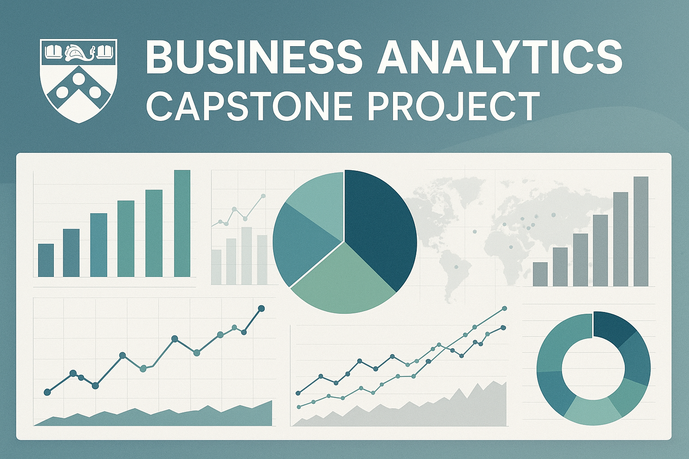

Visão Geral do Projeto
Este projeto de capstone foca na aplicação de técnicas de Business Analytics para resolver problemas de negócios específicos. Ele abrange desde a coleta e tratamento de dados até a modelagem e visualização de resultados.

University of Pennsylvania (Wharton) Business Analytics Specialization - Final Project
This project represents the culmination of the Business Analytics Specialization from the University of Pennsylvania's Wharton School, demonstrating comprehensive mastery of Customer Analytics, Operations Analytics, People Analytics, and Accounting Analytics.
🎯 Project Overview
English
This capstone project integrates all four core areas of business analytics into a comprehensive enterprise-grade analytics platform. The project demonstrates advanced analytical capabilities across customer behavior analysis, operational optimization, human resources analytics, and financial performance measurement. Built as the final deliverable for the prestigious Wharton Business Analytics Specialization, this platform showcases real-world application of business intelligence principles and data-driven decision making.
Português
Este projeto capstone integra todas as quatro áreas centrais da análise de negócios em uma plataforma de analytics de nível empresarial abrangente. O projeto demonstra capacidades analíticas avançadas em análise de comportamento do cliente, otimização operacional, analytics de recursos humanos e mensuração de desempenho financeiro. Construído como entrega final da prestigiosa Especialização em Business Analytics de Wharton, esta plataforma demonstra aplicação no mundo real de princípios de inteligência de negócios e tomada de decisão baseada em dados.
🏗️ Architecture & Components
Core Modules
- Customer Analytics Engine - Segmentation, lifetime value, churn prediction
- Operations Analytics Dashboard - Supply chain optimization, process efficiency
- People Analytics Platform - HR metrics, performance analysis, talent optimization
- Financial Analytics Suite - Performance measurement, forecasting, variance analysis
Technology Stack
- Backend: Python 3.9+ with FastAPI framework
- Data Processing: Pandas, NumPy, Scikit-learn
- Visualization: Plotly, Matplotlib, Seaborn
- Dashboard: Streamlit for interactive web interface
- Database: SQLite for development, PostgreSQL for production
- Analytics: Advanced statistical modeling and machine learning
📊 Features
🎯 Customer Analytics
- Customer segmentation using RFM analysis
- Lifetime value (CLV) calculation and prediction
- Churn prediction with machine learning models
- Customer journey mapping and touchpoint analysis
- Cohort analysis for retention insights
⚙️ Operations Analytics
- Supply chain optimization models
- Process efficiency measurement
- Inventory management analytics
- Quality control statistical analysis
- Resource allocation optimization
👥 People Analytics
- Employee performance metrics and KPIs
- Talent acquisition analytics
- Retention and turnover analysis
- Skills gap analysis and training recommendations
- Compensation and benefits optimization
💰 Financial Analytics
- Revenue and profitability analysis
- Cost accounting and variance analysis
- Financial forecasting and budgeting
- Investment performance evaluation
- Risk assessment and management metrics
📁 Project Structure
business-analytics-capstone/
├── src/
│ ├── business_analytics_dashboard.py # Main dashboard application
│ ├── data_generator.py # Synthetic data generation
│ └── main_platform.py # Core analytics engine
├── data/
│ ├── customer_data.csv # Customer analytics dataset
│ ├── operations_data.csv # Operations metrics
│ ├── people_data.csv # HR and people analytics
│ └── financial_data.csv # Financial performance data
├── notebooks/
│ ├── customer_analytics.ipynb # Customer analysis examples
│ ├── operations_analytics.ipynb # Operations optimization
│ ├── people_analytics.ipynb # HR analytics deep dive
│ └── financial_analytics.ipynb # Financial modeling
├── docs/
│ ├── technical_documentation.md # Technical specifications
│ └── user_guide.md # User manual and guides
└── README.md # This file
🎓 Academic Context
This project serves as the comprehensive capstone for the University of Pennsylvania (Wharton) Business Analytics Specialization, integrating knowledge from all four specialization courses:
- Customer Analytics - Understanding customer behavior and preferences
- Operations Analytics - Optimizing business processes and operations
- People Analytics - Leveraging data for human capital management
- Accounting Analytics - Financial data analysis and business performance
The platform demonstrates mastery of advanced analytics techniques, business intelligence principles, and practical application of data science in enterprise environments.
📋 Descrição
O Business Analytics Capstone Project é uma plataforma de análise empresarial completa que integra as quatro principais áreas da análise de negócios: Customer Analytics, Operations Analytics, People Analytics e Accounting Analytics. Desenvolvido como projeto final da Especialização em Business Analytics da Universidade da Pensilvânia (Wharton), este sistema oferece uma solução abrangente para tomada de decisões baseada em dados.
A plataforma combina algoritmos avançados de machine learning com dashboards interativos, proporcionando insights acionáveis para diferentes áreas de negócio. O sistema é capaz de processar grandes volumes de dados, gerar relatórios automatizados e fornecer análises preditivas que auxiliam na estratégia empresarial.
Principais Características: - Interface intuitiva com dashboards interativos - Análise preditiva usando modelos de machine learning - Geração automática de relatórios personalizados - Integração com múltiplas fontes de dados - Visualizações avançadas e storytelling com dados - Arquitetura escalável e modular
📦 Instalação
Pré-requisitos
- Python 3.9 ou superior
- pip (gerenciador de pacotes Python)
- Git
- 4GB de RAM mínimo (8GB recomendado)
- 2GB de espaço em disco
Passo a Passo
-
Clone o repositório:
bash git clone https://github.com/galafis/business-analytics-capstone.git cd business-analytics-capstone -
Crie um ambiente virtual: ```bash python -m venv venv
# Windows venv\Scripts\activate
# Linux/Mac source venv/bin/activate ```
-
Instale as dependências:
bash pip install -r requirements.txt -
Configure as variáveis de ambiente:
bash cp .env.example .env # Edite o arquivo .env com suas configurações -
Execute a geração de dados (primeira vez):
bash python src/data_generator.py -
Inicie a aplicação:
bash streamlit run src/business_analytics_dashboard.py
A aplicação estará disponível em http://localhost:8501
Instalação com Docker (Alternativa)
```bash
Build da imagem
docker build -t business-analytics-capstone .
Execute o container
docker run -p 8501:8501 business-analytics-capstone ```
💻 Uso
Início Rápido
- Acesse o Dashboard Principal:
- Abra seu navegador em
http://localhost:8501 -
A página inicial apresenta uma visão geral dos módulos disponíveis
-
Navegue pelos Módulos:
- Customer Analytics: Análise de segmentação, valor do cliente e churn
- Operations Analytics: Otimização de processos e eficiência operacional
- People Analytics: Métricas de RH e análise de talentos
- Financial Analytics: Performance financeira e análise contábil
Funcionalidades Principais
Customer Analytics
```python
Exemplo de uso programático
from src.main_platform import CustomerAnalytics
ca = CustomerAnalytics() ca.load_data(\'data/customer_data.csv\') segments = ca.rfm_segmentation() churn_prob = ca.predict_churn() ```
Operations Analytics
```python from src.main_platform import OperationsAnalytics
oa = OperationsAnalytics() oa.load_data(\'data/operations_data.csv\') efficiency = oa.calculate_efficiency_metrics() optimization = oa.supply_chain_optimization() ```
People Analytics
```python from src.main_platform import PeopleAnalytics
pa = PeopleAnalytics() pa.load_data(\'data/people_data.csv\') performance = pa.employee_performance_analysis() retention = pa.analyze_retention_factors() ```
Financial Analytics
```python from src.main_platform import FinancialAnalytics
fa = FinancialAnalytics() fa.load_data(\'data/financial_data.csv\') variance = fa.variance_analysis() forecast = fa.financial_forecasting() ```
Personalização
- Dados Personalizados: Substitua os arquivos CSV na pasta
data/pelos seus dados - Métricas Customizadas: Modifique os algoritmos em
src/main_platform.py - Visualizações: Adapte os gráficos em
src/business_analytics_dashboard.py - Relatórios: Configure relatórios automáticos editando os templates
Notebooks Jupyter
Explore análises detalhadas usando os notebooks fornecidos:
bash
jupyter notebook notebooks/customer_analytics.ipynb
📄 Licença
Este projeto está licenciado sob a Licença MIT - uma das licenças de código aberto mais permissivas e amplamente utilizadas.
Termos da Licença MIT
``` MIT License
Copyright (c) 2024 Business Analytics Capstone Project
Permission is hereby granted, free of charge, to any person obtaining a copy of this software and associated documentation files (the "Software"), to deal in the Software without restriction, including without limitation the rights to use, copy, modify, merge, publish, distribute, sublicense, and/or sell copies of the Software, and to permit persons to whom the Software is furnished to do so, subject to the following conditions:
The above copyright notice and this permission notice shall be included in all copies or substantial portions of the Software.
THE SOFTWARE IS PROVIDED "AS IS", WITHOUT WARRANTY OF ANY KIND, EXPRESS OR IMPLIED, INCLUDING BUT NOT LIMITED TO THE WARRANTIES OF MERCHANTABILITY, FITNESS FOR A PARTICULAR PURPOSE AND NONINFRINGEMENT. IN NO EVENT SHALL THE AUTHORS OR COPYRIGHT HOLDERS BE LIABLE FOR ANY CLAIM, DAMAGES OR OTHER LIABILITY, WHETHER IN AN ACTION OF CONTRACT, TORT OR OTHERWISE, ARISING FROM, OUT OF OR IN CONNECTION WITH THE SOFTWARE OR THE USE OR OTHER DEALINGS IN THE SOFTWARE. ```
O que a Licença MIT Permite
✅ Uso Comercial: Você pode usar este projeto em aplicações comerciais
✅ Modificação: Você pode modificar o código-fonte conforme necessário
✅ Distribuição: Você pode distribuir o software original ou modificado
✅ Uso Privado: Você pode usar o projeto para fins pessoais/privados
✅ Sublicenciamento: Você pode sublicenciar sob termos diferentes
Limitações
❌ Responsabilidade: Os autores não são responsáveis por danos
❌ Garantia: O software é fornecido "como está", sem garantias
Atribuição
Ao usar este projeto, você deve: - Manter o aviso de copyright nos arquivos - Incluir uma cópia da licença MIT em distribuições - Dar crédito ao projeto original quando apropriado
Contribuições
Contribuições são bem-vindas! Ao contribuir, você concorda em licenciar suas contribuições sob os mesmos termos da Licença MIT.
Desenvolvido como parte da Especialização em Business Analytics da Universidade da Pensilvânia (Wharton)
Documentação Detalhada
A documentação completa do projeto pode ser encontrada nesta seção, detalhando metodologias, análises e resultados.